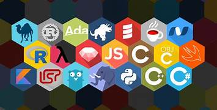

Bem-vindo ao DevCode
Linguagens de programação

Linguagens de Programação Linguagens de programação são conjuntos de regras e símbolos que os programadores usam para criar softwares, aplicativos, sites e sistemas. Elas funcionam como um meio de comunicação entre humanos e computadores. Cada linguagem tem sua própria sintaxe (regras de escrita) e serve para diferentes propósitos. Algumas são mais simples e indicadas para iniciantes, enquanto outras são poderosas e usadas em grandes sistemas. Tipos comuns de linguagens de programação: Python: Fácil de aprender, usada para ciência de dados, inteligência artificial, automação e desenvolvimento web. JavaScript: Usada para deixar sites interativos, como animações e botões que funcionam quando clicados. Java: Muito usada em aplicativos para Android e sistemas grandes. C e C++: Linguagens poderosas para desenvolvimento de sistemas operacionais, jogos e programas que precisam de alta performance. Ruby, PHP, Swift, Go: Outras linguagens populares com aplicações específicas. Por que aprender linguagens de programação? Aprender a programar ajuda a desenvolver o pensamento lógico e a resolver problemas. Além disso, permite criar ferramentas e soluções digitais que facilitam a vida das pessoas e empresas. Com o avanço da tecnologia, saber programar é uma habilidade muito valorizada no mercado de trabalho.
Esse site é voltado para compartilhar projetos, cursos e dicas sobre programação moderna. HTML, CSS, JavaScript, frameworks modernos e mais.